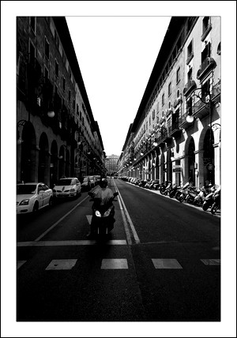

Avenida Jaime III
Avenida de Jaime III
Jaime III es una de las calles más conocidas de Palma. Su aspecto actual data de una gran reforme llevada por Gabriel Alomar en el a√±o 1952. Dicha calle, se ensanchó creándose arcos a cada lado de la calle sirviéndose de pilares para sostener los edificios inspirándose en el estilo neobarroco de los palacios romanos y creándose nuevas fachadas y modificaciones en aquellos edificios en los que se tuvo que modificar tanto la fachada como la reestructuración interior de ellas.